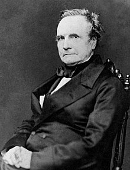

Charles Babbage was born December 26th of 1791 in London.
He was widely known for inventing the first mechanical computer.

About Charles Babbage
Charles' History
Babbage was considered as the "father of the Computer". This was due to the fact that he had created the first ever mechanical computer, It was called the "Difference Engine".
Charles Babbage then began to invent the Analytical Engine whcih had a massive impact on Science. After this he worked on his book "Economy of Manufactures". Shortly after this he passed away in 1871.
Babbage's Impact
Charles Babbage had a giant impact on the computer industry as he quite literally invented the first computer. His creation was so impactful it changed the whole computer industry and even the future. His presence has allowed more complex creations with mechanical machinary aswell as creating the Analytical Engine.
A quote from Babbage
"As soon as an Analytical Engine exists, it will neccessarily guide the future course of Sciene" - Charles Babbage